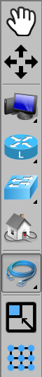
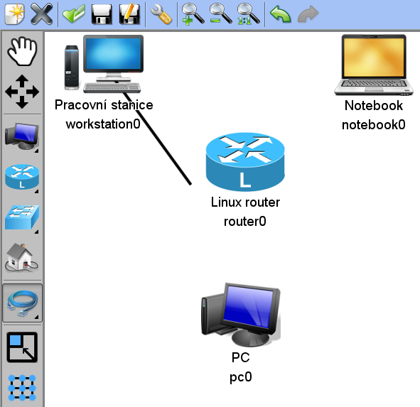
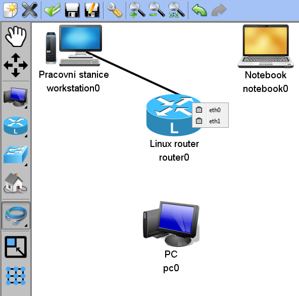
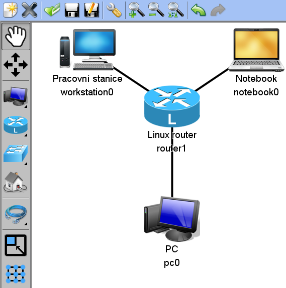

Opět začneme výběrem správného nástroje. V menu levým klikem vybereme nástroj kabel.
Levým tlačítkem klikneme na první komponentu a pote opět levým tlačítkem klikneme na druhou komponentu. Na následujícím obrázku je vidět tvorba kabelu v průběhu. Při použití levého tlačítka je vybráno první volné rozhraní.
Pokud chceme vybrat rozhraní ručně, použijeme pravé tlačítko místo levého, jak ilustruje následující obrázek.
Pokud chceme tvorbu kabelu zrušit, stačí kliknout libovolným tlačítkem mimo komponenty.
Propojená síť může vypadat například takto:
Další částí tutorialu je: Manipulace se sítí.